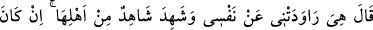
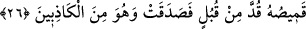

İyilik yapana iyilikten başka mükâfât.
Benim hakkıma tecâvüz ettin, riâyet etmedin.
Tuzu yedin, tuzluğu kırdın.
26. Yûsuf: “Asıl o benim nefsimden murâd almak istedi!” dedi. Kadının ailesinden
birisi şöyle şahitlik etti: “Eğer Yûsuf’un gömleği önden yırtılmışsa, kadın doğru
söylemiştir, o ise yalancılardandır.”
Sanki “Peki o zaman Yûsuf ne dedi?” diye sorulmuş ve cevap olarak şöyle
denilmiştir:
“Yûsuf:” kendini savunmak ve namusunun temiz olduğunu ifade etmek için: “Asıl o
benim nefsimden murâd almak istedi!” Benimle birleşmeyi isteyen kendisidir. Yoksa
dediği gibi ben ona bir kötülük yapmak istemiş değilim! “dedi.”
Züleyhâ her ne söylüyorsa yalandır
Onun yalanı zıyasız mum gibidir
Kadın sol eğriden yaratıldı
Kimse soldan sağ olduğunu görmemiştir
Aziz ise: “Sen bana bir delil getirmedikçe sözünü doğru kabul etmem” diyordu. Bir
rivâyete göre Aziz, Züleyhâ’nın sözlerinin zâhirine ve kendisini haksızlığa uğramış
göstermesine îtibar ederek Yûsuf’un zindana atılmasını emretti. İşte o zaman Yûsuf da
suçsuzluğunu gösteren bir şey göndermesi için Allah’a duâ etti.
Züleyhâ’nın dayısının daha beşikte bulunan üç, dört ya da altı aylık bir oğlu vardı.
Cebrail bu çocuğa gelerek onu beşiğinde oturttu ve “Yûsuf’un suçsuz olduğuna şâhitlik
et!” dedi. Çocuk da beşiğinden kalkıp koşmaya başladı ve Aziz’in önüne kadar geldi.
Bu çocuk Aziz’in yanında kalıyordu.
Beşikteki sabî ‘Ey Aziz, yavaş ol.’ diye figan etti
‘Yûsuf ’u cezalandırmakta acele etme’
‘Yûsuf ’a ceza lâyık değildir’
‘Yûsuf ziyâdesiyle lütuf ve merhamete lâyıktır’
Aziz çocuğun söylediklerine şaşırıp kaldı
Çocuğun sözüyle edeb kanunu üzere hareket etti
‘Ey ağzında süt kokan sabî!’ dedi.
‘Allah hakkı için güzel söz telkin eyle.’
‘Bu ateşi kimin alevlendirdiğini açıkça söyle’